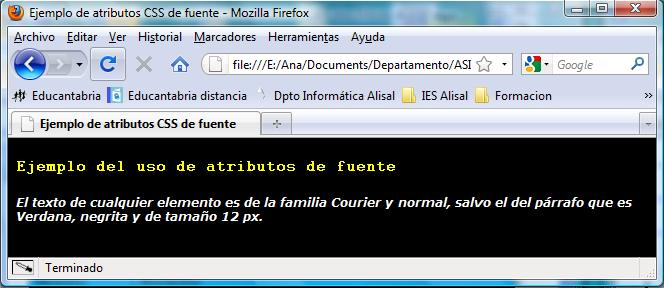

3.3.3.1.- Ejemplo.
Un ejemplo de un documento HTML en el que se utiliza este método para incluir formatos es:
<!DOCTYPE html>
<html>
<head>
<title>Ejemplo de atributos CSS de fuente</title>
<style type="text/css">
body { background-color: black; color:yellow; font-family: courier }
p { color: #ffffff; font:italic 900 12px Verdana; }
</style>
</head>
<body>
<h3>Ejemplo del uso de atributos de fuente</h3>
<p>El texto de cualquier elemento es de la familia Courier y normal, salvo el del párrafo que es Verdana, negrita y de tamaño 12 px.</p>
</body>
</html>Al publicarlo, en un navegador veríamos:

Para saber más
Si quieres saber más sobre propiedades de fuente, visita el siguiente enlace: